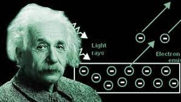

Albert Einstein was born on March 14, 1879, in Ulm, Germany. He attended the Luitpold Gymnasium in Munich and showed an early aptitude for mathematics and physics.
He was known for being a quiet child who had a deep curiosity about the world around him.
His family later moved to Italy, and he continued his education there.
Einstein is best known for his theory of relativity, which includes the special theory of relativity and the general theory of relativity. These theories revolutionized our understanding of space, time, and gravity.
The special theory of relativity, published in 1905, introduced the famous equation E=mc^2.
The general theory of relativity, published in 1915, explained the gravitational force in terms of curved spacetime.
Albert Einstein was awarded the Nobel Prize in Physics in 1921 for his work on the photoelectric effect, which demonstrated the particle-like nature of light.
Einstein's research on the photoelectric effect laid the foundation for the development of quantum mechanics.
Einstein signed a letter to President Franklin D. Roosevelt in 1938 warning about the potential development of atomic weapons by Nazi Germany.
Einstein spent his later years working on a unified field theory, attempting to reconcile the fundamental forces of nature.
Albert Einstein's contributions to science and his advocacy for peace left a lasting legacy.